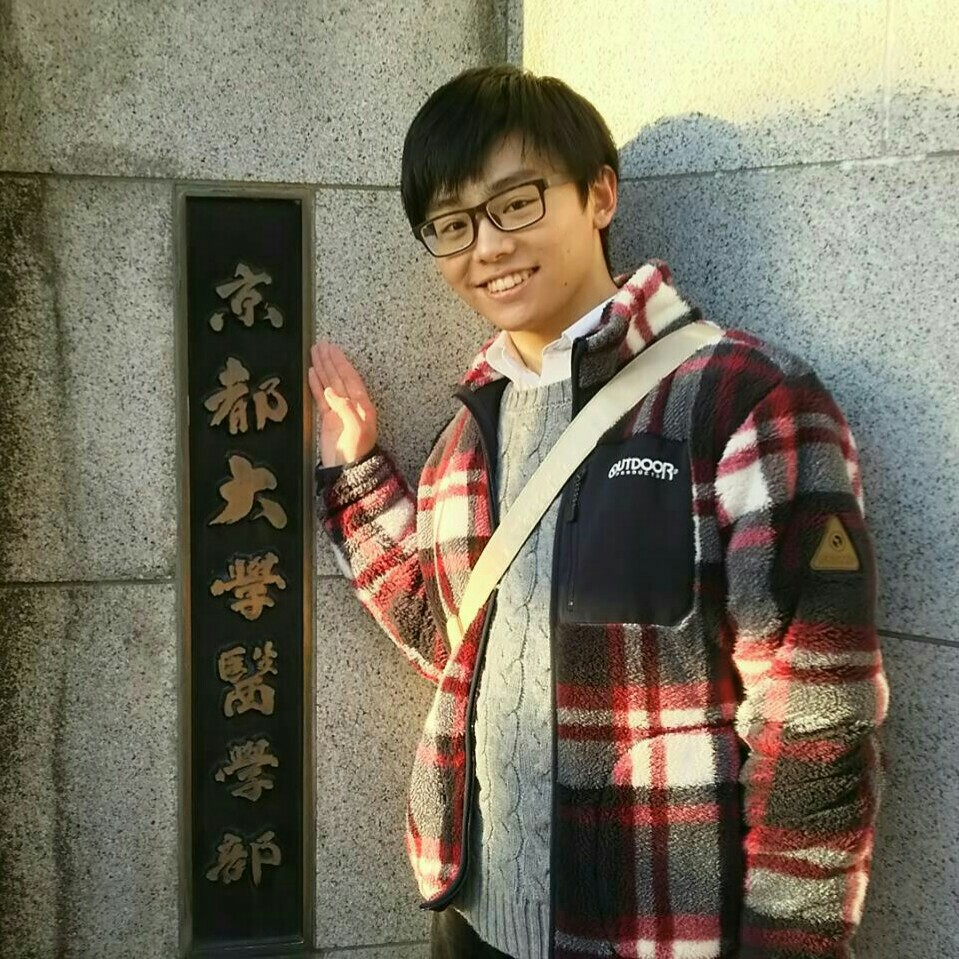
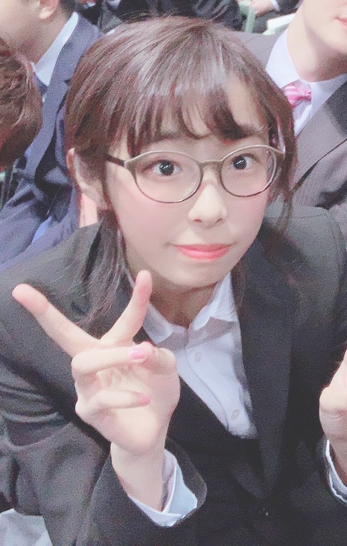

VOICE OF GRADUATES
-
末久義朗京都大学医学部医学科合格甲陽学院高等学校出身
inochi学生フォーラムでは、その教育プログラムにおいて、大阪大学・京都大学など様々な大学の学生の方との交流の場が設けられます。僕の場合だと、そういった場で、大学でできる多種多様な体験（国際交流等）についてのお話を聞くことが、受験に対するひとつのモチベーションにもなりました。
また僕の参加した年度には理化学研究所の施設の見学をすることができ、澤教授も関わっておられる再生医療の最先端にも触れることもできました。こうしたことも大きな刺激になりましたし、医学研究を身近に感じる一助にもなったと思います。
新年度からは大学生メンバーの一員として運営に参画することになりますが、一方では自分が医学生としてできることを考えながら研鑽を積み、他方では志ある中高生の夢の実現の手助けをできたらなと考えています。
-
樽谷 なぎさ京都大学医学部人間科学科先端看護科学コース進学清風南海高等学校出身
私は推薦で京都大学に合格しました。今から思えばそれもinochi学生プロジェクトで学んできたことが合格に繋がっただけでなく、自身の生きる指標を見つけさせてもらったと思っております。
inochi学生フォーラムに参加したことで医療問題について現場の雰囲気を感じながら触れることができ、ヒアリングや専門分野に特化した様々な方に参加しなければ得られなかったたくさんのことを教えて頂きました。また様々な医療問題や社会問題について考えるようになり、医療的ケアが必要な子供を取り巻く社会をより良くしたいという将来の夢も明確に持つことができました。これが本番での小論文や面接の対策に直結しただけでなく、自身のやりたいことも見つけることにも繋がりました。
また私は最終的にinochi未来フォーラムで、スタンフォードの先生を含めた著名な先生と観客500人の前でプレゼンテーションをしました。今思えばここで緊張しながらも自身のプロジェクトの話をして面接力が養われていったと考えております。
2019年度入試 inochi学生フォーラム 修了生 大学合格実績
東京大学 ２名
京都大学 ５名 (医学部医学科 2名)
国公立医学部医学科 15名
その他多数合格